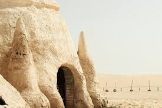
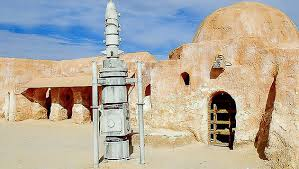

Star Tour est une entreprise de voyage fondée en 2006 autour des lieux cultes de Star Wars. Nous vous proposons autour d'un seul voyage de visiter plusieurs lieux de tournages de la plus célèbre saga de Science fiction de toute la galaxie.


Star Tour est une entreprise de voyage fondée en 2006 autour des lieux cultes de Star Wars. Nous vous proposons autour d'un seul voyage de visiter plusieurs lieux de tournages de la plus célèbre saga de Science fiction de toute la galaxie.
Star Tour vous propose de nombreuses destinations tout au long de l'année avec une impressionnate variété d'activités.
|  | Si vous voulez vous réchauffer, profiter du soleil et découvrir différentes épices ainsi que la mloukhia, voici la Tunisie. |
|  | Pour des vacances romantiques au soleil, l'Italie avec le lac de Come est le meilleur choix possible |
 |
Si vous souhaitez retrouver la paix intérieur, l'Ecosse est faite pour vous. |
Nous possédons une expérience de bientôt 20 ans et ce dans plus de 10 pays différents et sur plusieurs continents. Avec plus de 400 voyages déjà réalisés, nous avons un taux de satisfaction supérieure à 95% et forgés des souvenirs à tout jamais pour des milliers de personnes.
Star Tour a été fondé par trois personnes, Enzo Fulgori, Rayane Mehanni et Hugo Nkundiyeze. Unis par leur passions pour Star Wars, ils ont souhaité la partagé aux autres au travers d'une aventure forte et marquante.